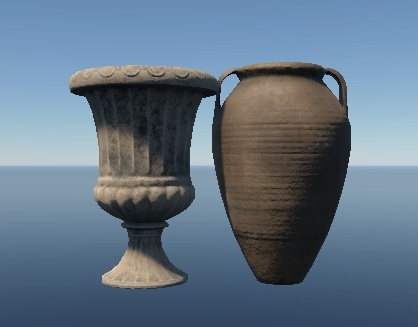

.composit.blk
What is a Composite Object?
A composite object is not an object, but a text file in the BLK format, which contains a list of reference objects and some of their parameters. These files are named according to specific conventions and always include one of the following suffixes:
_cmp.composit.blk: Simple composite object._random.composit.blk: Composite object with randomness (replacing objects or making objects disappear)._gameobj.composit.blk: Composite object containing game objects.
The primary purpose of composite objects is to simplify the work of level designers. For example, they can assemble a house with interior elements without manually placing each element every time.
From the game’s perspective, there is no difference between objects placed individually or by a composite object. In the game, all objects from the composite file are loaded as independent objects.
Note
The game engine does not recognize composite objects; they are solely
for convenience in arranging and editing sets of objects on a map. Only the
objects themselves (render instances, prefabs, etc.) are exported into the game
level. Composite files (.blk files) are not used beyond the editor.
Contents of .composit.blk Files
Composite objects consist of an enumeration of objects with certain parameters:
Object names.
Placement coordinates.
Probability of including an object (or replacing it with another or with an empty space).
Example of Declaring a Single Object
className:t="composit"
node{
name:t="obj_name:rendInst"
tm:m=[[1, 0, 0] [0, 1, 0] [0, 0, 1] [0, 0, 0]]
}
In this example:
className:t="composit": Indicates that this.blkfile will be treated as a composite by the engine.node{}: Represents an individual building block of our composite object (node). Ensure all curly braces are correctly matched; a missing or extra brace will break the composite.name:t="obj_name:rendInst": Specifies the name and type of the node. Here, “obj_name” is a render instance.
If there are no “duplicates” (objects with the same name but different types), you can simply specify the name without a type:
name:t="obj_name"
This simple naming indicates the object’s placement at specified coordinates without additional parameters like disappearance or replacement.
By all means, you shouldn’t have any cases when type specification is necessary:
it is required only when there are full namesakes of different types, for
example “asset:rendinst” (asset.lod00.dag), “asset:composit”
(asset.composit.blk) and “asset:prefab” (asset.dag), which should not be
done at all.
If there are no namesakes, it is sufficient to record without specifying the
type: name:t="obj_name".
This is a simple object name. Simple in the sense that we can’t do anything with
it (set the probability of disappearance, substitution by another object, etc.).
We just say that there is such an object at such coordinates. If this string is
missing or name:t="", then the node will be “empty” – no asset will be drawn
in it.
We can set here either a rendInst, a composite or a game object (discussed
below). Composite doesn’t care what it refers to – it’s just a text file with a
list of objects placed in certain places. Names are given without extensions.
That is, instead of table_a.lod00.dag, you should just specify table_a. Or,
instead of table_a_plates_cmp.composit.blk, we set table_a_plates_cmp.
Important
For the tools, the asset that was found earlier is prioritized. For example,
from two objects in the same directory table_a.composit.blk and
table_a.lod00.dag the engine will call table_a.composit.blk (in alphabetical
order .composit will be found before .lod), but if the composite, for
example, is in the subdirectory composits/, then the first will be the
.lod. Thus, simply rearranging resources in a new way can break a
compositor referring to “namesakes” without an explicitly specified type.
For this reason, it is often an error when a composite refers to a .dag of
the same name. That is, a table_a rendinst is specified inside
table_a.composit.blk. The engine will not call the table_a rendInst – it
will call the table_a composite. Because of this, we get into recursion
(when an object refers to itself an infinite number of times).
So always call composites by content. For example,
is_table_a_dinner_chairs_cmp.composit.blk (a dining table with chairs), or
is_book_case_shelf_0_7m_a_cmp.composit.blk (a 0.7-meter shelf for a bookcase).
However, there are still situations when you want to set the same names. For
example, we already have table_a (rendinst) in multiple places. And, after two
years, it became necessary to put plates on it.
We can make a composite table_a_plates_cmp.composit.blk, in which to add
plates and replace it in these multiple places (and then overwrite it with
future edits).
This is the matrix of the object:
tm:m=[[1, 0, 0] [0, 1, 0] [0, 0, 1] [0, 0, 0]]
Note
This is a matrix, not an indication of the object’s rotation in degrees or scales in percent. Do not try to pick up parameters through a text editor. They should be generated by a script or obtained when creating a composite object in one of the editors. Only the last block of the matrix is the position of the object in space, in meters. This block can be edited through a text editor.
If no matrix is specified at all, it will be equal to the one above. Zero offsets and rotation, unit size.
Note
The matrix specifies the transforms relative to the parent of our node. In the example above, the parent is the composite itself, i.e. the offset is specified relative to the pivot of the entire composite. However, this is not always the case. More on this later.
Example of Declaring a Random Node
If we want one of several variants to be placed in the specified coordinates instead of one particular asset, then we need to specify the node differently.
node{
ent{
name:t="obj_name1"; weight:r=1;
}
ent{
name:t="obj_name2"; weight:r=1;
}
}
Here, instead of always having the same asset, we randomly choose one of the two
with equal probability. There can also be other parameters inside node{}, such
as a matrix. Only "name:t" cannot be specified at the same time as ent{}.
ent{}
This is how an entity block is allocated – there can be several of them inside a node, but only one at a time will be output.
Accordingly, if we specify only one ent{} block, we will get exactly the same
result as in the first example. There is always only one option to choose from.
Inside there is already familiar to us parameter name:t, which works exactly
the same way as in nodes. In addition, a new parameter weight:r has been
added. If the parameter was not specified, it would be equal to 1 by default.
The higher its value is compared to the weight of other nodes, the higher the probability that random will choose this option. The weight can be written in any “dimension” – 0.0001 or 1000 – it is not the number itself that matters, but how much it is greater/lower than the weight of its neighbors. We specify the values that are easier to perceive.
Note
Unlike nodes, entities do not have their own matrix and other parameters. Only the name and weight. The rest of the parameters are taken from the node in which they are located.
The syntax allows you to separate entity parameters not only by semicolon, but also by jumping to the new line. The two methods in the example below are equivalent. Tabulation is used only to improve readability, in fact it will work without indentation, and all blocks are separated only by curly braces.
ent{name:t="obj_name"; weight:r=1;}
ent{
name:t="obj_name"
weight:r=1
}
When creating a random node in a text editor, the second option may be more convenient if the entity name is very long.
What should we do if we want to sometimes not spawn anything? Add the empty
entity mentioned earlier. As we remember, an empty name or no name:t parameter
will give us an empty node:
node{
ent{
name:t="obj_name1"; weight:r=1;
}
ent{
name:t="obj_name2"; weight:r=1;
}
ent{
name:t=""; weight:r=2;
}
}
Now half the time nothing is drawn, because the weight of the empty node is equal to the total weight of the other entities.
Note
If you have built a composite that randomizes a single node (e.g. a chair to a
similar one) – it’s a must to give it a name *_random.composit.blk – a simple
composite object.
It will work without it. But this composite will be arranged by a human, and the
search needs a meaningful name that explains what is inside without having to
open each .blk file and check the contents.
Example of Declaring Multiple Objects
Let’s reinforce our knowledge by going through the same steps multiple times. In practice, it’s unnecessary to use different node formats side by side (as it can complicate readability), but each method works.
className:t="composit"
/* Standard object declaration. Without a specified matrix, it will have zero
rotation, zero offset, and a scale of `1`: */
node{
name:t="obj_name0"
}
/* Random entity with a single option behaves the same as the block above.
The "default" matrix is identical to its absence: */
node{
ent{
name:t="obj_name1"; weight:r=1;
}
tm:m=[[1, 0, 0] [0, 1, 0] [0, 0, 1] [0, 0, 0]]
}
// One of the objects or nothing is chosen with equal probability:
node{
ent{
name:t="obj_name2" // parameters can be separated by line breaks
weight:r=1
}
ent{
name:t="obj_name3"; weight:r=1; // or by semicolons
}
ent{
name:t=""; weight:r=1;
}
tm:m=[[1, 0, 0] [0, 1, 0] [0, 0, 1] [0, 0, 0]]
}
Example of Declaring Random Transforms
As we discussed earlier, using a different format is required to select from multiple entities. The process is similar for random object placement – rather than a matrix, we use special parameters.
Available Parameters for Randomization
node{
offset_x:p2=0, 0
offset_y:p2=0, 0
offset_z:p2=0, 0
rot_x:p2=0, 0
rot_y:p2=0, 0
rot_z:p2=0, 0
scale:p2=1, 0
yScale:p2=1, 0
}
All the parameters are optional but cannot be used simultaneously with a matrix. If a matrix is specified, any of these will be ignored.
offset_*:p2: Specifies the object’s position along the corresponding axes in meters. Replace the*with the axis letter. The first value is the absolute offset, and the second is the allowed deviation in both directions after that. For example, a value of3, 0.5means the final coordinate will be between 2.5 and 3.5 meters. If unspecified, it defaults to0, 0.rot_*:p2: Similarly specifies rotation in degrees. To set any random rotation around an axis, just input0, 180– random values will cover a full rotation around the axis (from −180° to 180°). Defaults to0, 0if unspecified.yScale:p2: Unlike rotation and offset, scaling on all axes cannot be randomized independently. The exception is the Y-axis, which points upward in Dagor. The first value is the initial scale, and the second is the deviation. Defaults to1, 0if unspecified.scale:p2: Uniform scaling on all axes. Defaults to1, 0and can be used alongside Y-axis scaling.
Random Transforms for Multiple Composites Simultaneously
The example above is inconvenient when controlling multiple composites
simultaneously, such as creating randomly slightly open windows using multiple
rendering instances for visual variety. Each shutter could be assigned its
random rotation parameter, but making adjustments would be cumbersome. To change
the angle, you’d have to go through all references to these shutters in every
composite – slow and prone to error. To avoid this, parameters can be placed in
a separate .blk.
Structure of File with Random Transforms and Naming Conventions
Technically, the composite will accept any name, but since people will work with
them, the file name should be meaningful. Common suffixes are _rot.blk for
rotations, _offset.blk for offsets, or _transform.blk for both in a general
file. If some objects have left and right versions with different rotation
directions, add the suffixes _l and _r accordingly.
For example, for left window shutters, it makes sense to create a file
_shutter_rot_l.blk with:
rot_y:p2=85, 5
rot_z:p2=0, 0.8
And for the right ones, _shutter_rot_r.blk with the corresponding rotations
for the right side. This file can then be included in the composite of the
shutter, for example,
name_city_house_window_shutter_1200x1900_a_l_cmp.composit.blk:
className:t="composit"
node{
name:t="name_city_house_window_shutter_1200x1900_a_l"
include "_shutter_rot_l.blk"
}
Important
The path to the
_shutter_rot_l.blkfile is absolute. In the example above, the including file is in the same directory as the composite. If you place this file elsewhere, specify the full path in the command line format.We are effectively substituting the shutter’s
name_city_house_window_shutter_1200x1900_a_l.lod00.dagfile with a composite that has a random rotation,name_city_house_window_shutter_1200x1900_a_l_cmp.composit.blk. This means we include this_shutter_rot_l.blkin the composite of a single shutter – nothing else is there. This is the composite that will later be placed in the windows, instead of the shutter itself.
Why Use Includes in Nested Composites?
Priority of the Matrix: Remember, the matrix has a higher priority. If the node is not at the “zero” of the composite, the only way to change its position is through random offset parameters along the unused axes.
Avoid Doing This in the “Outer” Composite, Though It Works:
className:t="composit"
node{
name:t="name_city_house_window_shutter_1200x1900_a_l"
include "_shutter_rot_l.blk"
offset_y:p2=0.7, 0
offset_x:p2=1, 0
offset_z:p2=2, 0
}
node{
name:t="name_city_house_window_shutter_1200x1900_a_l"
include "_shutter_rot_l.blk"
offset_y:p2=0.7, 0
offset_x:p2=1, 0
offset_z:p2=-2, 0
}
This will work and move the shutter to the specified coordinates, but all
editors currently operate with matrices by default – exporting transforms this
way won’t be possible. Positioning with this way is only feasible through
blind manual .blk editing – not the most convenient or fastest method.
Potential for Duplicate Transformations: Without seeing the contents of the included
.blk, it’s easy to duplicate non-visible transformations, which can lead to bugs. Eachincludeis replaced on the fly with the contents of the specified file. If a parameter is specified twice, only the first instance will be applied.
Here’s how inattentiveness can break things:
className:t="composit"
node{
name:t="name_city_house_window_shutter_1200x1900_a_l"
rot_y:p2=90, 0 // First transformation specified before include, shutter will
include "_shutter_rot_l.blk" // always stick at 90°, ignoring Y randomization
}
node{
name:t="name_city_house_window_shutter_1200x1900_a_l"
include "_shutter_rot_l.blk"
rot_y:p2=90, 0 // Second declaration of a parameter already present in the include,
// attempting to rotate an additional 90° on Y will be ignored.
}
Example of Node Hierarchy in Composites
Inside the node{} block, there can be more than just a list of its parameters.
Another node{} can be placed inside. In this case, the inner node is
considered a child, and its transforms are calculated not from zero but from the
parent’s matrix.
className:t="composit"
node{
tm:m=[[1, 0, 0] [0, 1, 0] [0, 0, 1] [0, 1, 0]]
node{
name:t="obj_name0"
tm:m=[[1, 0, 0] [0, 1, 0] [0, 0, 1] [0, 0, 1]]
}
}
In the example above, "obj_name0" is written inside another node{}, meaning
it inherits the offset. The upper node is an “empty” one with an offset of one
meter along the Y-axis. The node with the object has an offset of 1 meter
along the Z-axis in its matrix, but remember that matrices combine. Relative to
the composite’s center, it will be offset along both Y and Z. We can set other
coordinates for it, add another block with different objects next to it, etc.
It’s not frequently used, but it’s possible. Composites are exported from daEditor this way – all nodes are parented to an empty node with a default matrix. In text form, such composites are harder to perceive, and until recently, we didn’t have the ability to visually edit composites, so practical use is still rare.
Practical Example of Node Hierarchy Use
Let’s imagine we have two tables 0.7 meters tall and two cups. We want one of the tables to be randomly selected in the composite and rotated. The cups should also be chosen randomly, placed near one side, and shifted only along the table’s length. They should also rotate and, perhaps, sometimes not appear at all. We can implement this as follows:
className:t="composit"
node{
rot_y:p2=0, 10
ent{
name:t="table_a";
}
ent{
name:t="table_b";
}
node{
offset_y:p2=0.7, 0
offset_z:p2=0.2, 0.05
offset_x:p2=0, 0.25
rot_y:p2=0, 180
ent{
name:t="cup_a";
}
ent{
name:t="cup_b";
}
ent{
name:t="";
}
}
}
Breaking it down:
The parent node has a random rotation from −10° to 10°. One of the tables is drawn with equal probability since each entity has a weight of one, as we didn’t manually set a different value.
The cup node is nested inside the table node, meaning its offset occurs relative to the table, considering its rotation. Afterward, an absolute offset of 0.7 meters upward is added – the cup should always be on the tabletop, no randomization needed. But since we want to randomize other transforms, we can’t use a matrix, so we set it this way.
We then shift closer to the edge by 0.2 meters to place it off-center and add a bit of randomness – from 0.15 to 0.25, so it doesn’t fall off at the extremes.
Along the table’s length, the distance is more significant – let it randomize equally in both directions. The absolute offset is not set, and the deviation is from −0.25 to 0.25 meters.
Finally, we add a completely random rotation – from −180° to 180°.
{kind=link}
Important
For one-time use, this approach is faster than the old method, where a separate subcomposite was created for each random element. One for selecting cups and their rotation. Another for choosing the table. Then one for placing the cup on the table with an offset. And finally, the top-level one, which slightly rotates the table with the cup on it. But here – just one. However, if cups are to be placed, for example, on shelves or in cabinets, it makes more sense to store them in their own subcomposite so you don’t have to add a third cup to the table, cabinet, and shelf composites one by one. If cups are only found on these tables for some reason, then yes, don’t create unnecessary entities.
Thus, the correct application of this approach is for parts of a whole, which shouldn’t be found with the same set of transforms. For example, randomly opening car doors, the hood, or the whole/intact/missing windshield in their coordinates relative to the body can be done this way. Similarly, cabinet doors, unless it’s a modular system with the possibility of attachment at different coordinates.
If composite parts might be needed elsewhere, move them to a subcomposite to simplify reuse and potential future edits. If a node with certain transforms and randomness is only required once, for example, as part of a unique object, the single composite approach is preferable.
Game Objects
Overview
Game objects, or gameObj, are interactive elements within the game that are
dynamic and have a direct impact on gameplay. Examples of such objects include
health kits, ammunition, weapons, and other equipment. These objects are
automatically generated from an object known as loot_box.
Typically, these objects are placed on various horizontal surfaces such as tables, chairs, shelves, and cabinets.
Example Node Description
node{
name:t="loot_box:gameObj"
tm:m=[[0.3, 0, 0] [0, 0.3, 0] [0, 0, 0.3] [0, 0.6, 0]]
}
In this block name:t="loot_box:gameObj" specifies the object name along with
its type. The format is mandatory.
As discussed earlier, while omitting the type might work if there are no conflicting assets of different types, it is crucial to specify the type when editing the composite in text format. This ensures clarity and prevents errors.
Creation Process
Unfortunately, these nodes are not generated automatically through dag2riRes or the daEditor. They must be manually scripted.
You can (and should) place a cube named loot_box at the desired locations in
your scene/editor and then export them into a composite. The placement process
is identical to that of regular render instances. However, all these cubes will
initially be recorded as:
name:t="loot_box"
Therefore, after exporting, you will need to manually update each of these objects within the composite, assigning them the correct parameters as described above.
Important
After adding game objects to a composite, it is mandatory to name it using
the format *_gameobj.composit.blk to distinguish it as a simple composite
object.
Other Types of Game Objects
loot_box is not the only type of game object that needs to be placed in the
environment. Other commonly used game objects include indoor_wall,
wall_hole, and envi_probe for accurate indoor lighting and reflections,
vertical ladders, light sources, such as flickering lights, and many more.
Chain Destruction and Composite Nodes
Chain Destruction
We can assign certain assets the parent type within the game’s parameters (not
within the models – this is done in our internal .blk files). All objects
without an assigned parent are considered children. When a parent is
destroyed, all children whose collisions intersect the bounding box of the
parent will also be destroyed.
Important
The system operates strictly as follows: One parent destroys all children whose collisions intersect its bounding box.
This means:
Children cannot destroy parents.
Children cannot destroy other children. Only those children whose collisions intersect the bounding box of the parent will be destroyed.
No subsequent chain of destruction will occur; the system is rigid and does not support additional logic beyond these rules.
Examples
Let’s take an example, where we have an urn as a parent:
{kind=link}
and an amphora as a child:
{kind=link}
Placement Scenario 1: All correct. The child’s collision (the “spike” at the bottom) enters the bounding box of the parent urn. Destroy the parent, and the amphora will also be destroyed.
{kind=link}
Placement Scenario 2: Ambiguous. If we want to destroy the amphora through the urn, it’s correct – the side collision of the amphora enters the urn’s bounding box. But if we don’t want that (since the amphora is just standing next to the urn, not on it), it’s incorrect. The amphora will be destroyed because of the urn.
{kind=link}
Placement Scenario 3: Incorrect. The parent urn is hanging in the air. Destroy it, and the amphora will collapse too. But if we destroy the amphora, the parent urn will remain hanging.
{kind=link}
Placement Scenario 4: Incorrect. When the parent urn is destroyed, only the middle amphora will be destroyed because its collision enters the parent’s bounding box. The top amphora will remain hanging in the air.

Placement Scenario 5: As an exception, parents can destroy other parents
following the same rules (and only within the immediate “circle” – collision
contact with the first destroyed parent is required). A special parameter must
be manually defined in the properties (in the same .blk files) to enable this.
It is not a default behavior for all parents, but a specific feature.
{kind=link}
Important
Do not overuse this feature, as it is difficult to predict how and where objects will be positioned in the game. For instance, we once allowed this parent barrel to destroy other parents. It successfully took down a parent tent and parent ammunition crates, as shown above.
Object Placement Rules
Why Discuss Destruction in this Section?
Because developers often forget that the game knows nothing about composites. This has already been emphasized multiple times at the beginning, and let’s discuss it again.
Only the objects and their matrices are exported into the game. A vast hierarchy of a house with decorators, down to the last random composite vase, will be exported into the game as a hundred objects with matrices. No composites will exist in the game!
Similarly, objects cannot just destroy their neighbors arbitrarily. Only parents destroy children (and sometimes other parents).
Thus, do not create composites where objects are stacked mindlessly on top of each other! A composite is not magic. It’s merely a list of objects – it won’t assist with destruction mechanics!
Examples
Placement Scenario 1: Canned cans on a cupboard shelf. Logically, the only parent here is the cupboard. Destroy it – everything inside it wil be destroyed. It turns out that the cans lie on top of each other and they are not parents. If we shoot the bottom can – the top one will remain hanging in the air.
{kind=link}
Placement Scenario 2: On top of the closet are individual non-parent objects: an upside-down shoebox lid, the shoe box itself inside the shoe box lid and a shoe inside that shoe box. According to the rules this is incorrect, because you can try and shoot the lid from under the box, and the box from under the shoe. But here the thicknesses and dimensions are so small that this can be neglected. This is an acceptable violation that in most cases will never be noticed.
{kind=link}
Placement Scenario 3: The issue has already been resolved, so here is an old screenshot that doesn’t quite capture the correct angle. In the center, we can observe a typical problem where the child object (a basin) hasn’t been properly aligned with its parent (a wardrobe), which at this point has already been destroyed. However, our focus here is on the arrangement to the right – the artistic stacking of basins on top of the wardrobe. It looks impressive, but it will be 100% noticeable when the lower basins start getting destroyed before the upper ones.
{kind=link}
Important
Summary:
Avoid stacking objects on top of each other without clearly defining which is the parent and which is the child.
Child objects should only be placed on their parent in a single layer. Any objects that do not collide with the parent’s bounding box will not be destroyed correctly.
If you need to create a complex composition that cannot be achieved with the current setup due to these limitations, request permission to create a unique rendering composition that will break apart using a destruction mechanism.
Hierarchy of Composites
Problems with Poor Hierarchy
A common issue when creating composites is that all objects are often placed within a single large composite. The rationale behind this approach is understandable – it’s easier to arrange everything in one scene, export it, and forget about it.
However, the problem is that work with composites never truly ends there. Errors
are inevitable, and revisions are guaranteed. At some point, these revisions
will occur directly in the composite’s .blk file, not in the original scene
where everything was initially arranged. Once this happens, the original scene
becomes obsolete, and all work shifts to the .blk file.
This can lead to significant issues. For example, consider a composite:
{kind=link}
Imagine that every object here is not part of a subcomposite but is instead manually placed within this composite (for the sake of example, though this is not actually the case).
Let’s examine the typical problems that might arise using this setup. Take this cabinet with vases:
{kind=link}
Notice that it’s placed in several locations:
{kind=link}
The designer, seeking efficiency, may simply copy and paste the entire setup elsewhere in the scene. The result is identical arrangements throughout the house, with perhaps one or two vases changed to give the illusion of randomness.
We’ve previously discussed chain destruction. Now, imagine you didn’t quite align one of the vases with the cabinet, and it ends up hanging in the air when the cabinet below is destroyed.
This introduces several problems:
Remember, this setup has been copied across multiple locations in the house.
Some vases may also be standing independently, scattered on the floor, for instance.
You’ll need to painstakingly search through the composite, identify each vase, and adjust their positions individually.
Now, consider needing to place this cabinet with vases outside, with the landscape involved. Either the vases will clip through the cabinet, or they’ll float above it while the cabinet sits on the ground.
Procedural rotations and shifts are nearly impossible in such a scenario. Keep in mind that these adjustments often can’t be automated and need to be manually tweaked after tools like daEditor or dag2riRes. In a large composite, this becomes utterly impractical.
Additionally, performing simple randomization, such as swapping one cabinet for another, becomes highly inconvenient. You’ll have to sift through hundreds of lines.
The root cause of these problems is the unreadability of the composite. It’s nearly impossible to quickly make any adjustments in such a tangled mess. In extreme cases, an entire house’s furnishings (minus the house itself) might be crammed into a single composite, like this:
{kind=link}
Typically, we don’t assign tasks to “create a composite for a single house.” More often, the tasks involve “creating 15 houses with full furnishings,” handled by 5-8 different team members. Each person ends up spending an enormous amount of time individually setting up unique render instances for their houses, instead of leveraging low-level random composites created by a dedicated team member—a method that could save everyone hours of work.
It’s understandable that every artist wants to create something unique, perhaps to tell a story or guide the player towards a specific thought, like “this is where the homeowner loved to admire their favorite vase on this cabinet.” But no one will notice these details because in an online shooter the environment needs to:
Fit seamlessly into the overall scene;
Not interfere with gameplay.
What players will notice is a poorly placed object that disrupts their aim due to collision issues. You will notice the massive headache when you try to find that object in a composite with hundreds of lines. And your colleagues will notice the time wasted on manually arranging objects instead of using pre-made sets.
Important
Summary of Problems
Uncontrolled propagation of errors.
Inability to align object groups with terrain.
Lack of variety.
Excessive time spent manually adding variety to the scene.
Unreadable composite files, making it extremely difficult to understand what is located where and what it controls.
Inability to reuse composites, preventing the use of ready-made asset groups in neighboring houses.
To avoid these issues, it’s crucial to adhere to strict composite hierarchy rules.
Proper Hierarchy
The hierarchy of composites should be broken down to the smallest procedural modification of an object. Let’s use the example of vases and cabinets:
Create composites for each small procedural modification of an object:
Procedural rotations/shifts (e.g., rotating vases around their axis).
Object randomization (e.g., swapping cabinets or vases for similar ones).
From the composites created in step 1, build composites for object groups.
Create several variations of vases arranged on a cabinet.
Combine these variations into a single random composite like “random vase arrangement on cabinet”.
From the composites created in step 2, create a random composite for “cabinets with random vase arrangements”.
From the composites created in step 3, assemble a composite for furnishing a large object, such as “random cabinets with vases placed around the object”.
Finally, include the composite from step 3 in the overall “house” composite, along with similar composites for “windows-doors”, “exterior decor”, “interior decor”, etc.
Note
Unfortunately, there is no universal composite structure – it all depends on what you’re creating. If you need a random composite for a single cabinet, you might only need one level of hierarchy – a random composite for that cabinet, where you can specify shifts, rotations, and randomization.
But if you’re creating a furniture and dishware store, you may need 3-6 levels of composite hierarchy.
The key is to start with the lowest level of composites and work your way up step by step. This approach ensures everything remains as editable and fixable as possible. You’ll be able to resolve any placement issues across all game maps by simply tweaking a few numbers in one small, unobtrusive file.
Nuances about Composites
Additional Notes on Naming Conventions
As previously mentioned multiple times throughout this chapter, including at the beginning, let’s clarify a few key points:
Composites vs. Render Instances: Unlike render instances, composites don’t take up space in the game client (they simply aren’t included). Therefore, it’s not a significant issue if you copy successful composites from other maps and rename them for your own purposes. This approach helps you avoid potential problems if the original composite’s creator decides to modify it, which could disrupt your setup.
Detailed Naming: Always name composites as descriptively as possible, including all relevant prefixes and suffixes designated for both composites and render instances. This is crucial because, for example, you might create a composite intended for interior use but fail to include the
is_prefix. A colleague might then mistakenly use it outdoors and add landscape alignment, causing the composite to sink into the ground in all your buildings.Proper Use of Composites: Those placing existing composites should also pay close attention to their intended use. If a composite is clearly marked for interior use, do not place it outside. Instead, duplicate it, give it a new name, and avoid any issues.
Random Composites: If the composite involves randomization, include the numbers of the randomized objects in the name. For example,
is_table_abc_random.composit.blk.Content Ownership: Clearly indicate the thematic ownership of a composite in its name. For instance, if you’re creating a composite of ancient vases, name it accordingly so that colleagues don’t unknowingly place it in a futuristic setting.
Object Placement on Terrain and Relative to Each Other
You might have noticed that when exporting composites from the editor, they
often include an additional parameter, place_type:i=1, in the nodes. For
example:
node{
name:t="fachwerk_horse_cart_a_cmp"
tm:m=[[0.999018, 0, -0.0443057] [0, 1, 0] [0.0443057, 0, 0.999018] [-6.7688, 0.0028134, -1.22241]]
place_type:i=1
}
node{
name:t="haystack_i"
tm:m=[[0.020657, 0, 0.999787] [0, 1, 0] [-0.999787, 0, 0.020657] [6.92909, 0, -1.47888]]
place_type:i=3
}
These values can range from 1 to 6 (or potentially even higher).
This occurs because you exported objects that were placed on the terrain according to specific rules.
{kind=link}
Placement Types:
place pivot:
place_type:i=1:Vertical placement of the object’s pivot on the terrain (pivot in Dagger is at 0.0.0). Suitable for large, tall objects that extend deep into the ground (buildings, poles, large piles of debris)—essentially anything unaffected by terrain height variations.place pivot and use normal:
place_type:i=2:Placement of the pivot on the terrain, using the normal at the pivot point (if the terrain is uneven, the object will tilt according to the normal). Best for smaller items that need to conform to the terrain’s shape (e.g., barrels, buckets, bicycles, cans). Large objects might not align correctly if their pivot is on the edge of a slope, causing part of the object to float in the air. Use this only for small assets.place 3-point (bbox):
place_type:i=3:Placement using three points of the object’s bounding box. The bounding box is built based on the object’s maximum geometry limits, and the object is placed on the ground at three of its extreme points, accounting for terrain height variations. This method is more precise than type 2 but slightly more demanding on the editor. It’s needed for large objects that must conform to terrain undulations (e.g., haystacks, piles of boards, ladders, carts, vehicles).Note
If the object extends below zero (e.g., piles, foundations), it may be pushed up because the placement is based on the bounding box, which is built on the outermost geometry points. For such objects, use types 1 or 2.
place foundation (bbox):
place_type:i=4:Vertical placement on the terrain so that the entire base of the bounding box is not above the terrain. The object may partially extend below the terrain but will never float above it.place on water (floatable):
place_type:i=5:Vertical placement on a water plane (yes, water has a plane).
place pivot with rendInst collision:
place_type:i=6:Vertical placement of the render instance’s pivot on the collision of another render instance.Works well on simple objects:
but struggles with complex ones as it may not correctly identify the collision surface:
{kind=link}
{kind=link}
{kind=link}
{kind=link}
{kind=link}
{kind=link}
{kind=link}
Important
When exporting composites from the daEditor, ensure you set the placement types for each component of the future composite (e.g., every barrel, bucket, and vehicle).
When exporting composites from a *ds Max scene, manually assign these parameters to the appropriate objects in the final composite.
Do not export composites without these parameters and then apply them to the
entire composite afterward (e.g., setting the entire exterior decoration
composite of a house to place_type:i=3). This often leads to bugs, as it’s
unclear what is used as the pivot or bounding box.
Always assign the correct placement types to the objects intended for them.
Object Placement Precision
In any game, objects are placed on a grid according to their pivot point (recall that the pivot for Dagger is at 0.0.0). This means that objects cannot be placed with greater precision than the smallest unit allowed by the grid, which we can refer to as the Dagger millimeter.
As a result, objects placed in non-zero positions will align perfectly only when the composite has no rotation or offset.
For instance, a house with DP (dynamic positioning) components will remain perfectly aligned regardless of rotation or displacement because both the house’s base and its DP components are exported relative to zero at the correct positions. They are exported this way to ensure optimal placement.
However, objects like windows, doors, or paintings that are hung on walls made of debris or bricks may “drift” when the composite is rotated or moved, especially paintings. But don’t worry.
In War Thunder, the placement grid isn’t precise enough for this to cause significant issues – we have large margins for error. In daNetGame-based games, this “drifting” only happens in the Asset Viewer and daEditor. When the location is exported, a much higher level of precision is used than in the tools, so objects generally align correctly. While you should check the final placement, you don’t need to worry that it will be “just as bad” as it appears in the daEditor.
Examples
{kind=link}
{kind=link}
Special Parameters
Composites have several parameters designed for specific, limited-use cases.
War Thunder
The quantizeTm:b=yes parameter should be applied outside the nodes
(immediately after the line className:t="composit") when combining the
geometry of a render instance with the collision of a prefab in a composite.
These object types have different positioning precision on the map (prefabs are less precise). Additionally, prefabs have even less precision when it comes to rotation. Therefore, when combining these two objects, the collision almost always fails to align with the visual geometry.
This parameter forces the prefab to align exactly with the coordinates of the render instance.
className:t="composit"
quantizeTm:b=yes
node{
tm:m=[[1, 0, 0] [0, 1, 0] [0, 0, 1] [0, 0, 0]]
node{
name:t="sheer_cliff_a"
tm:m=[[1, 0, 0] [0, 1, 0] [0, 0, 1] [0, 0, 0]]
}
node{
name:t="sheer_cliff_a_prefab_collision:prefab"
tm:m=[[1, 0, 0] [0, 1, 0] [0, 0, 1] [0, 0, 0]]
}
}
daNetGame-based Games
Random Object Seeds: In daNetGame-based game, all objects within a composite, for example, share the same color scheme. This means you won’t find a house with windows and doors of varying colors – the colors differ as you move across the map, but each house’s windows and doors will always share a uniform color.
This is intentional – each composite is assigned exactly one seed (a randomly chosen value, essentially). This seed is applied from the top-level composite down to the most nested object.
This approach has pros and cons. For instance, all the furniture, toys, and dishes inside a house will be uniformly colored. This makes it impossible to create something like a fabric shop, where you’d expect fabrics of different colors, because all the fabrics will share one color. Similarly, identical furniture items will show the same level of wear.
This can be addressed using the ignoreParentInstSeed:b=yes parameter, which is
applied to the specific object (or composite) that should have a different seed
from the parent composite.
For example, if you want each piece of fabric in a store to have a different color, you need to apply this seed to each fabric node within the composite, not to the overall “arranged fabrics” composite. Otherwise, the entire composite will have a different seed, but the objects within it will share a single seed.
Correct Example: The shoe and its box will have different seeds and therefore different colors.
node{
name:t="is_high_heel_shoe_a"
ignoreParentInstSeed:b=yes
tm:m=[[0.0888685, 0.939605, 0.205868] [0.49344, -0.244331, 0.902145] [0.896062, 0.0213662, -0.484326] [-2.40811, 1.9364, -31.9424]]
}
node{
name:t="is_high_heel_shoebox_a_opened"
ignoreParentInstSeed:b=yes
tm:m=[[0.0765914, 0, -0.997063] [0, 1, 0] [0.997063, 0, 0.0765914] [-4.67105, 2.93796, -24.8412]]
}
Incorrect Example: Although the entire composite of items will have a different seed from the main composite, all items within it will share the same seed.
node{
name:t="city_1_department_store_shops_stuff_cmp"
ignoreParentInstSeed:b=yes
tm:m=[[1, 0, 0] [0, 1, 0] [0, 0, 1] [0, 0, 0]]
}
Important
Summary
Apply this parameter to specific render instances or composites that need to have a different seed from the main composite.
Do not apply it to the entire composite expecting everything inside to become randomized – it won’t. All nested objects will still share a common seed, even if it differs from the main composite’s seed.
Checklist
Before considering composites as finished, you should verify the following:
Correct display of the composite object in Asset Viewer: Ensure nothing is misplaced or missing, and everything appears as intended.
Correct generation of variable objects using the “Generate Random Seed” button in the right panel: Check that nothing overlaps or disappears unexpectedly, and no extra objects are loaded.
No errors in the Asset Viewer log: Monitor the console for red error lines related to asset display issues in the composite due to incorrect naming, missing textures, or other unfinished work.
The composite log typically only indicates that an object isn’t displaying. You’ll need to open the problematic object itself to see what the log says about it.
Creating a Standard Composite Object
Having discussed the structure and theory behind composite objects, let’s now delve into the actual creation process. There are several methods available for creating a composite object, each with its own advantages and disadvantages:
Manual Creation
There isn’t much to elaborate on here. You simply create a file with the
extension .composit.blk and manually define a series of nodes, specifying the
object names and their coordinates.
This method is only practical when you need to add parts of a single object without any offsets, such as the walls of a house, its indoor furnishings, decals, decor, and ground (everything being geometry or subcomposites centered at the house’s “zero” point).
Pros:
All composite object parameters are accessible in a single text file.
No need for the original scene file; you only need a new or existing
.composit.blkfile.
Cons:
Blind Work: You can’t see the result while working, making it challenging to align objects correctly.
Matrix Definitions: Manually defining matrices is virtually impossible – let the computer handle that.
This method is typically used as part of a pipeline to refine non-random composite objects generated by other means.
Using the daEditor
This method is simple:
Place the necessary objects in the daEditor as desired.
Select the objects, starting with the central one (which will later become the composite’s center).
In the Landscape tab, select the Export as Composit option:
{kind=link}
Pros:
Easy to apply.
Unlike the manual method, it simplifies editing object transforms – matrices are automatically calculated.
Cons:
Composite Center: You can’t control the composite’s center. When selecting multiple objects with a frame, it’s impossible to predict which one will become the “zero” point. When selecting objects sequentially, the first selected object becomes the “zero” coordinate, which isn’t always convenient. You can’t set a center outside of an object.
Random Transformations: Only fixed matrices and specific assets are allowed; you can’t set random transformations or objects.
A workaround is to add an additional object at the desired center, start selecting from it, and then delete this placeholder after exporting the final composite. However, this isn’t particularly convenient.
This method is typically used to create simple object sets (e.g., piles of debris, rows of barrels, log stacks). Adding randomness requires further refinement by other methods.
Using the dag2riRes Script
Using the dag2riRes script is another relatively simple method. While the description may seem complex, after trying it out, the steps will become logical and clear, requiring minimal effort from the developer. The key is to follow the steps in order, as missing one will force you to start over.
The idea behind this method is to assemble the composite from objects in 3ds
Max, export them as a .dag file, and then use the script to convert .dag
into .composit.blk. The script also allows you to split all objects exported
into one .dag file into individual .dag files.
Pros:
Real-Time Preview: Move nodes directly in the viewport with instant feedback.
Snapping Option: Allows for more precise placement of objects if needed.
Cons:
No Randomization: You can’t define random transformations or entities.
No Include Statements: Unable to include general transformations.
Workflow:
Import all the base Levels of Details (LODs) of models into one scene that you plan to use in the composite.
Attach each model into a single object (if they were split across multiple objects in their scenes).
Name each model as its corresponding
.dagfile, minus the.lod00.dagsuffix (e.g., if the DAG istable_a.lod00.dag, name the modeltable_a).Reset the model’s pivot to
0.0.0, and zero out rotation and scale. Failing to do so will result in incorrect matrix calculations in the final composite (non-zeroed parameters will affect the matrices).For example, if the pivot isn’t at
0.0.0but remains a meter along the X-axis, the model will shift that distance in the composite.
Assign a three-digit postfix to each object:
*_000(e.g.,table_abecomestable_a_000).When cloning, ensure the three-digit postfix remains intact:
table_a_001,table_a_002, etc.
The object that will serve as the composite’s center should have the postfix
*_origininstead of_000(e.g.,table_origin).Position the objects as desired, cloning them within the scene as references or instances. Ensure the rotation, position, and scale match your intended adjustments.
Export the final layout as a single
.daginto the directory with the dag2riRes script. It’s easier to keep the DAG name consistent to avoid confusion later.Run the script, which will generate a
composit.res.blkfile alongside the.dag(more details below).Rename and move the
composit.res.blkfile to the desired location. Ensure the composite name is correct – refer to the beginning of the document for naming conventions.
Important
If several nodes in the 3ds Max scene are linked into a hierarchy before export, the script will treat the entire hierarchy as a single node named after the root object.
Running the dag2riRes Script
Open FAR or the command line.
Navigate to the
_Dag2riRes/directory.Enter the following command:
dag2riRes-dev.exe -s:<name.dag> -d:simple_dags -no_tex
where
<name.dag>is your.dagfile’s name. You can assign any name.
Naming Reminder: make sure to name the final composite correctly! Not just the name but also the postfixes.
*_cmp.composit.blk: Simple composite object.*_random.composit.blk: Composite object with randomization (object substitution, object disappearance).*_gameobj.composit.blk: Composite object containing game objects.
Using the Composite Editor in Asset Viewer
Using the Composite Editor in Asset Viewer is a relatively new option, still under development, so some basic features might be missing at the time of writing and will be added over time.
Pros:
Highly Visual: You can see the results of your work in real-time in the viewport.
Works with
.composit.blk: Allows editing existing composites without needing the original 3ds Max scene.Randomization: Nodes can be created with random entity selection.
Transform Randomization: Nodes can be created with random transforms.
Cons:
In Development: Performance issues when editing large composites (thousands of nodes), especially noticeable in daNetGame-based games due to frequent use of multiple nested structures.
No Multi-Node Selection: Can only move nodes one by one.
No Undo: If you move a node and change your mind, you must either manually revert it or reload from disk, losing all unsaved changes.
Limited Gizmo: Only available in world coordinates – can’t move an asset along one of its own axes in the viewport.
No Include Support: Currently, there is no support for
includestatements.Interface Development: Some elements might not be intuitive.
In addition to adding includes, it allows you to fully create a hierarchy of
composites.
Using the dag4blend Add-on in Blender
dag4blend Composite Editor is a part of the dag4blend add-on, which was previously a simple importer-exporter. It’s a new option, also under development.
Pros:
Composite Import: You can import composites without needing the original
.blendscene. All you need is the.composit.blkfile and the asset.dagfiles (applicable only to the version with geometry import).High Visual Clarity: The workflow is highly visual, making it easier to see and manage your changes.
Convenient Workflow: Features like snapping, multi-node selection, and more make it significantly easier to work with, similar to the ease of use in 3ds Max.
Random Entity Nodes: You can directly create nodes that include random entity selection.
Random Transform Nodes: You can directly create nodes with randomized transforms.
Subcomposite Editing: You can decompose and edit any subcomposite at its final position within the parent composite, allowing you to see the exact final node placements.
Composite-to-DAG Conversion: Offers the ability to convert composites into
.dagfiles.Game Object Conversion: Allows converting
gameObjnodes into meshes and converting a mesh’s bounding box into agameObjnode, which simplifies the placement of elements like indoor walls, wall holes, environmental probes, etc.
Cons:
No Include Support: Currently, there is no support for
includestatements.Limited Random Node Preview: The visibility of entities within random nodes must be manually toggled; they are not randomized automatically.
Game Object Preview: The preview for
gameObjs must be manually configured; otherwise, they appear as empty nodes.No Random Transform Preview: There is no preview available for randomized transforms.
Axis Confusion: Blender uses the Z-axis as the upward direction, whereas the Dagor Engine uses the Y-axis. This difference must be considered when defining parameters for random transforms.
Creating Random Composites in 3ds Max
When planning to use random objects in nodes, it’s best to prepare for this in advance, during the composite assembly in 3ds Max. This is crucial to avoid randomization issues later. If you skip this step, you might find a chair clipping through a table, or a table through a dresser in the final composite.
For instance, suppose you want to create a random composite of chairs placed
around a table, with the chairs being of different sizes and shapes. You would
combine them into one object and name it after the final random composite (e.g.,
chairs_abc_random for a composite named chairs_abc_random.composit.blk).
{kind=link}
You should use this combined geometry during placement to see the boundaries of the objects that will be randomized in the node.
To configure the randomization itself, further refinement of the composite by other methods is necessary.